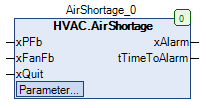

AirShortage (FB)¶
FUNCTION_BLOCK AirShortage
Kurzbeschreibung¶
Erkennung einer Luftmangelsituation und Erzeugung einer StörmeldungTypische Anwendung: Luftmangelüberwachung an einem Ventilator mit einem Differenzdruckschalter
Darstellung¶

Schnittstellen¶
Eingänge¶
Name Datentyp Wertebereich Initialwert Funktion xPFb BOOL Eingang Prozessrückmeldung (Differenzdruckschalter), FALSE = Luftmangel xFanFb BOOL Betriebsmeldung des Ventilators xQuit BOOL FALSE Rücksetzung der Störmeldung
Ausgänge¶
Name Datentyp Wertebereich Initialwert Funktion xAlarm BOOL Ausgang - Störmeldung tTimeToAlarm TIME Zeitdauer bis zur Auslösung der Störmeldung
Sollwerte / Parameter¶
Name Datentyp Wertebereich Initialwert Funktion udiControlTime UDINT 1s ... 3600s 30s Wartezeit bis Eingang xPFb ausgewertet wird xControl BOOL TRUE Freigabe der Überwachung
Funktionsbeschreibung¶
Allgemeines¶
Dieser Funktionsbaustein dient zur Erkennung einer Luftmangelsituation an einem Ventilator durch die Auswertung der Signale
Eingang - Differenzdruckschalter xPFb und Betriebsmeldung - Ventilator xFanFb.
Ausgang - Störmeldung xAlarm¶
Der Ausgang - Störmeldung xAlarm wird aktiviert ( xAlarm = TRUE ), falls die unten stehende Bedingungen 1 und 2 gleichzeitig erfüllt sind.
Bedingung 1: Der Eingang für den Differenzdruckschalter xPFb befindet sich mindestens während Wartezeit udiControlTime permanent im Zustand FALSE ( = Luftmangelsituation ).
Gleichzeitig ist die Überwachung generell freigegeben ( xControl = TRUE ).
Bedingung 2: Die Betriebsmeldung für den Ventilator xFanFb befindet sich mindestens während Wartezeit udiControlTime permanent im Zustand TRUE ( = Ventilator in Betrieb ).
Gleichzeitig ist die Überwachung generell freigegeben ( xControl = TRUE ).
Der Ausgang - Störmeldung xAlarm wird in folgenden Fällen deaktiviert ( xAlarm = FALSE ):
Fall 1: Die Bedingungen 1 und / oder 2 sind nicht erfüllt und die Rücksetzung der Störmeldung xQuit ist aktiv ( = TRUE ).
Fall 2: Die Bedingungen 1 und / oder 2 sind nicht erfüllt und die Freigabe der Überwachung xControl ist nicht aktiv ( = FALSE ).
Zeitdauer bis zur Auslösung der Störmeldung tTimeToAlarm¶
Am Ausgang Zeitdauer bis zur Auslösung der Störmeldung tTimeToAlarm werden je nach Betriebssituation unterschiedliche Werte angezeigt.
Situation 1: Ausgabe der Restzeitdauer bis zur Auslösung der Störmeldung ( Bedingungen: xPFb = FALSE, xControl = TRUE, xFanFb = TRUE )
Situation 2: Falls die Situation 1 nicht vorliegt, so wird permanent der Wert 0.0 ausgegeben.
Visualisierung¶
Codesys¶
- InOut:
Scope Name Type Initial Comment Input xPFb BOOL Eingang Prozessrückmeldung (Differenzdruckschalter), FALSE = Luftmangel xFanFb BOOL Betriebsmeldung des Ventilators xQuit BOOL FALSE Rücksetzung der Störmeldung udiControlTime UDINT 30 Wartezeit bis Eingang xPFb ausgewertet wird xControl BOOL TRUE Freigabe der Überwachung Output xAlarm BOOL Ausgang - Störmeldung tTimeToAlarm TIME Zeitdauer bis zur Auslösung der Störmeldung